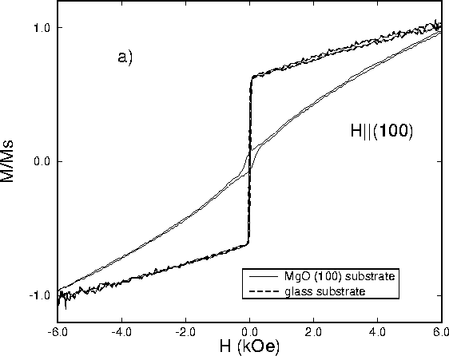

Magnetization curves for Fe/Si multilayers grown on various
substrates. The magnetization data is normalized to the
highest measured value in order to facilitate comparison of
the shape of the two data sets. a) Hysteresis loops for the
(Fe40Å/Si14Å)x60 multilayers simultaneously grown
on MgO (001) and glass. The remanence is lower for the film
grown on MgO.